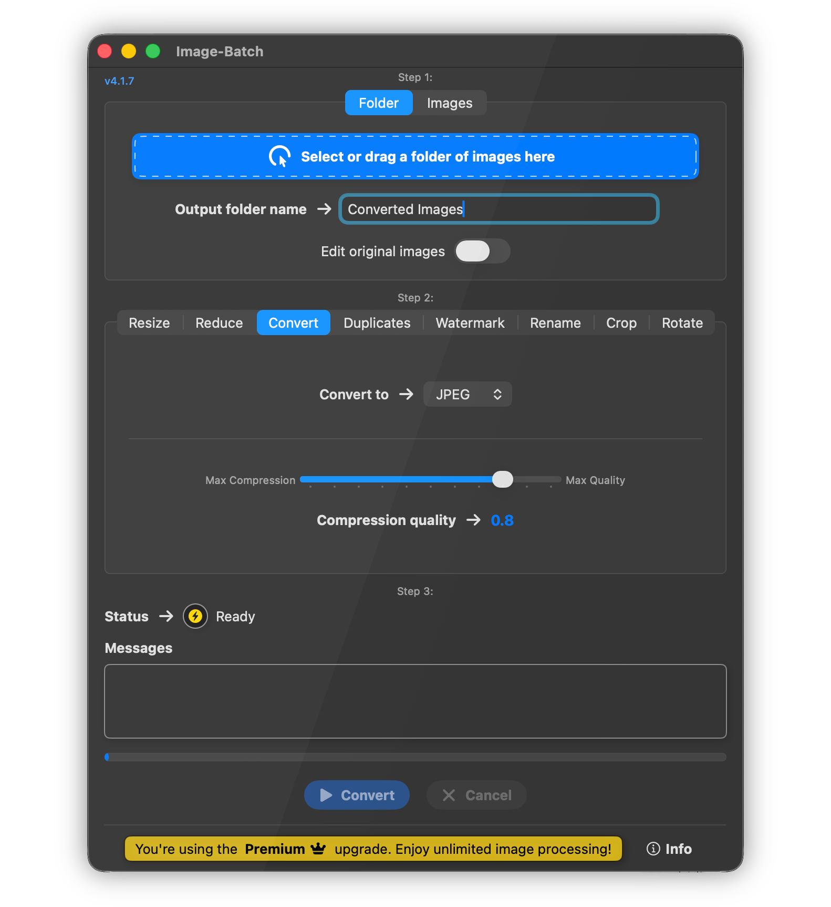

Convert images to WebP or AVIF on Mac
In Image-Batch, open the Convert tab, choose WEBP or AVIF under Convert to, and click Convert. WebP and AVIF are included with Premium. The new files are written to a folder on your Mac.
-
Open Image-Batch. In Step 1, leave Folder selected, then select or drag a folder of images. Edited copies go into a new folder named Converted Images inside that folder.
-
In Step 2, open the Convert tab. Under Convert to, choose WEBP or AVIF (Premium). Lite includes JPEG. Pro adds PNG, TIFF, and HEIF. Set Compression quality if you want; compression is not available for PNG or TIFF.
-
If you choose AVIF, a Heads up! message explains that AVIF can take longer than other formats. Click OK, then in Step 3 click Convert. When Status says Conversion Complete, you can click View Images to open the Converted Images folder.

Tips
- AVIF often makes smaller files, but it can take longer because of how it compresses. That is expected.
- After converting, you can run Reduce on the Converted Images folder if you also need a target file size.
- Your original photos stay untouched, and copies go into a new folder, unless you turn on Edit original images (Pro and Premium), which writes the new file in the original folder and removes the original.